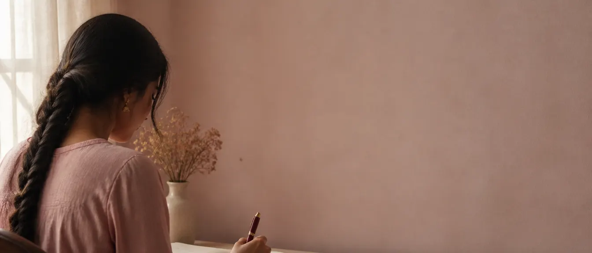

Choisissez une histoire
Par catégorie, par auteur, ou parmi celles mises à la une. Chaque fiche indique le temps de lecture avant que vous ne vous lanciez.
Histoires d'amour · lecture & écriture
Love Ink est une plateforme francophone où l'on lit, écrit et partage des histoires d'amour : premier amour, seconde chance, amours à distance. La lecture est gratuite, chaque texte est relu avant publication, et le mode lecture est pensé pour s'y perdre.
Sans publicité. Votre adresse e-mail n'est jamais affichée.
Comment ça marche
Par catégorie, par auteur, ou parmi celles mises à la une. Chaque fiche indique le temps de lecture avant que vous ne vous lanciez.
Le mode lecture retient votre position. Revenez le lendemain : l'histoire vous attend dans « Continuer à lire ».
Un cœur, un commentaire, un message à l'auteur. Et quand vous aurez envie de prendre la plume, votre premier brouillon n'est qu'à un clic.
Le mode lecture
Pas de distraction, pas de publicité : le texte, votre rythme, et quelques réglages qui changent tout.
Taille, interligne et police au choix. Vos réglages sont conservés d'une histoire à l'autre.

Clair, sépia ou nuit, pour lire tard sans fatiguer les yeux.
Votre progression est mémorisée. Le feed vous propose de reprendre là où vous en étiez.
Le reste de la page s'efface : temps de lecture restant, lettrines, séparateurs de scène. Rien d'autre.
« Ici, chaque mot est une caresse, chaque phrase un battement de cœur. »Love Ink, depuis le premier jour
« On n'écrit jamais une histoire d'amour seul : il y a toujours quelqu'un qui la lit. »Pour celles et ceux qui écrivent
« Une lettre qu'on relit a toujours quelque chose de plus à dire. »Premier amour, seconde chance
« Lire tard, le cœur allumé, le reste du monde éteint. »Le mode nuit
Questions fréquentes
Oui. La lecture est gratuite et sans publicité. Il suffit d'un pseudo et d'une adresse e-mail pour créer un compte.
Des histoires d'amour en français : premier amour, coup de foudre, seconde chance, amour à distance, lettres d'été, histoires tristes ou magiques.
Créez un compte, ouvrez l'espace Publier, écrivez à votre rythme. Chaque texte est relu par un modérateur avant d'être mis en ligne.
Oui. Love Ink fonctionne dans le navigateur, sur téléphone comme sur ordinateur, avec reprise automatique de la lecture là où vous vous étiez arrêté.
C'est gratuit, et ça commence maintenant
Un pseudo, une adresse e-mail, et vous lisez dans la minute. Écrire viendra quand vous voudrez.